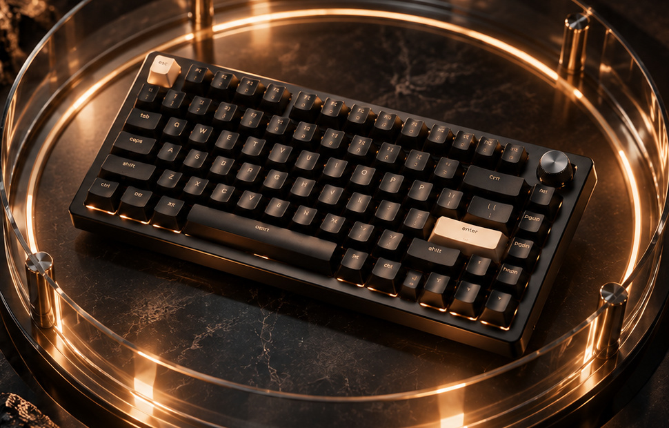
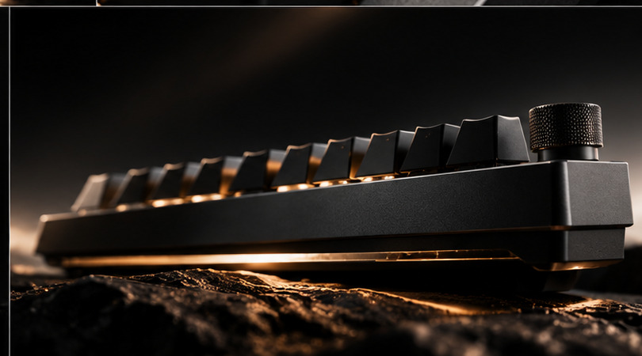
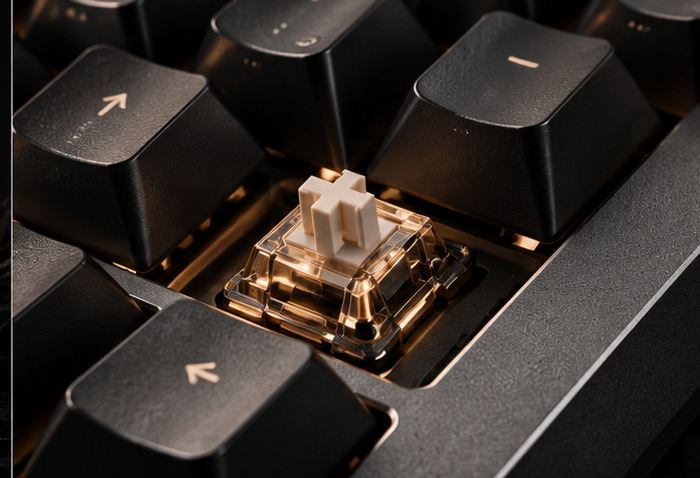
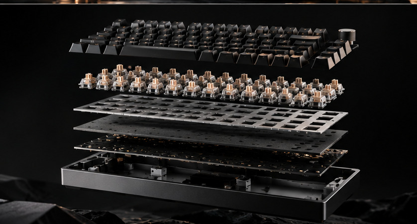
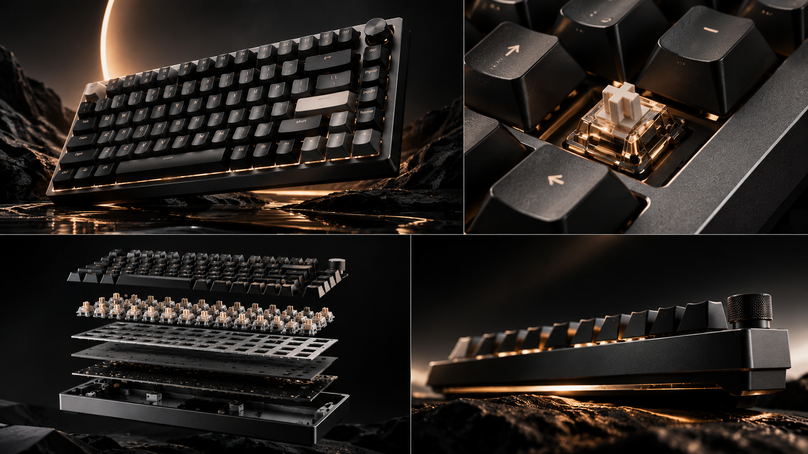
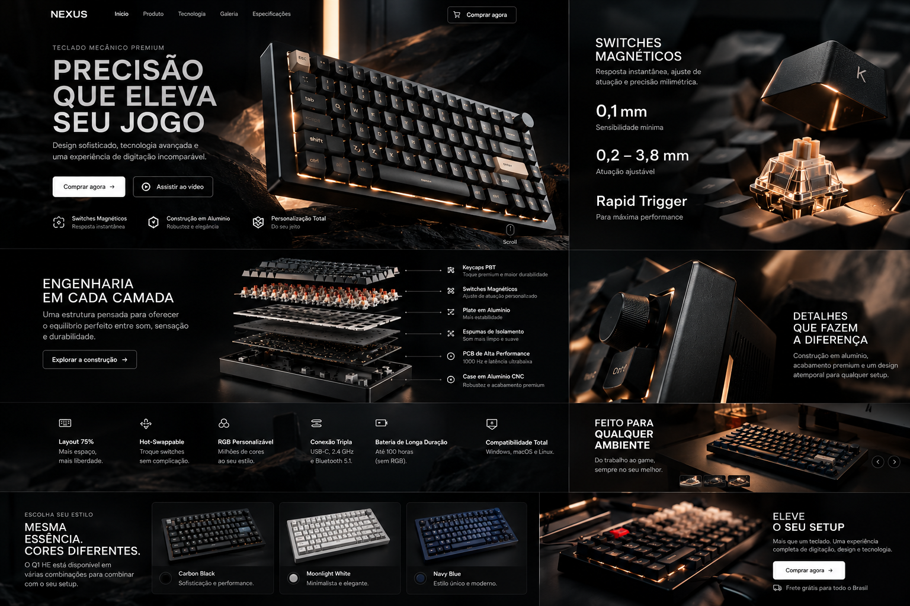
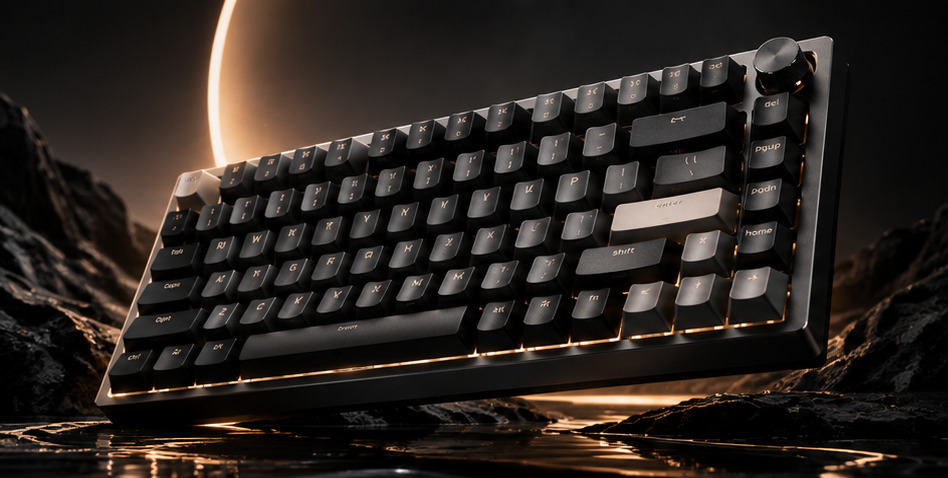

MAGNETIC
Atuação configurável com precisão milimétrica.

TECLADO MAGNÉTICO PREMIUM / 75%
Construção em alumínio, switches magnéticos e controle milimétrico apresentados como uma peça de design.

01 / DETALHES
Cada linha tem função. O corpo de alumínio, o knob tátil e o perfil compacto transformam presença visual em uma ferramenta de uso diário.
02 / SENSAÇÃO
O sensor magnético lê a posição da tecla continuamente. Ajuste o ponto de atuação para combinar velocidade, controle e intenção.


03 / ENGENHARIA
Camadas de material trabalham juntas para entregar rigidez, isolamento e uma sensação sólida a cada pressionar.
MENOS DISTRAÇÃO.

Atuação configurável com precisão milimétrica.
USB-C, 2.4 GHz e Bluetooth para qualquer setup.
Construção sólida que parece tão premium quanto funciona.
Controle profundo sobre teclas e comportamento.
04 / EXPERIÊNCIA
Compacto para liberar a mesa. Sofisticado para fazer parte dela. Um teclado que funciona no jogo, no código e no trabalho.

05 / PERFORMANCE
Velocidade só importa quando vira confiança. Por isso cada especificação existe para reduzir o espaço entre intenção e resposta.

KEYCHRON Q1 HE / CONCEPT EXPERIENCE
Mais controle. Mais presença. Menos coisa entre você e o que importa.
Ver produto oficial ↗Campanha conceitual independente. Imagens ilustrativas.